Proiect realizat de [Numele Tău]
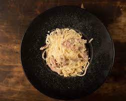
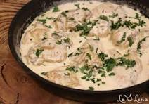
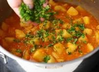
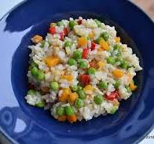
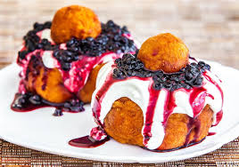
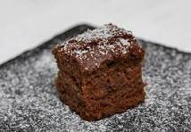
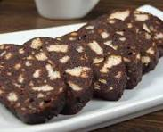
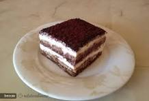
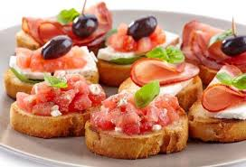
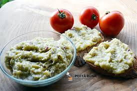
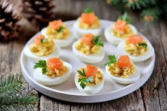
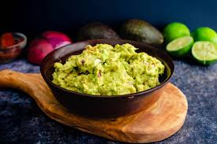
Ingrediente: Paste, ouă, pancetta, parmezan.
Preparare: Se fierb pastele. Se prăjește carnea. Se amestecă ouăle cu brânza și se adaugă peste paste.
Ingrediente: Piept pui, smântână gătit, ciuperci, usturoi.
Preparare: Se prăjește puiul, se adaugă ciupercile și la final smântâna cu usturoiul.
Ingrediente: Cartofi, ceapă, ardei, pastă tomate.
Preparare: Se călesc legumele, se adaugă apa și se fierb până scade sosul.
Ingrediente: Orez, mazăre, morcov, unt.
Preparare: Se călește orezul, se adaugă legumele și supa treptat.
Ingrediente: Brânză vaci, făină, ouă, dulceață.
Preparare: Se formează gogoșile și se prăjesc. Se servesc cu smântână și dulceață.
Ingrediente: Făină, cacao, zahăr, lapte, unt.
Preparare: Se amestecă totul și se coace 30 de minute.
Ingrediente: Biscuiți, cacao, lapte, rahat, rom.
Preparare: Se amestecă biscuiții rupți cu siropul cald de cacao.
Ingrediente: Pișcoturi, mascarpone, cafea, cacao.
Preparare: Se înmoaie pișcoturile în cafea și se pun în straturi cu crema.
Ingrediente: Pâine, roșii, usturoi, busuioc.
Preparare: Se prăjește pâinea, se freacă cu usturoi și se pun roșiile.
Ingrediente: Vinete coapte, ceapă, ulei, sare.
Preparare: Se toacă vinetele și se amestecă cu ulei și ceapă.
Ingrediente: Ouă fierte, maioneză, muștar, pateu.
Preparare: Se face pasta din gălbenușuri și se umplu albușurile.
Ingrediente: Avocado, roșii, ceapă, lămâie.
Preparare: Se zdrobește avocado și se amestecă cu restul legumelor tăiate.